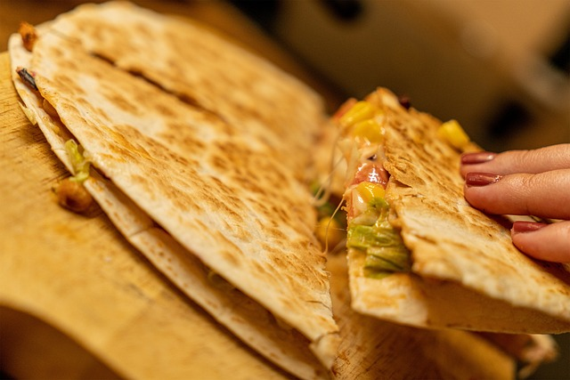

Quesadillas

Description
A quesadilla (kay-suh-dee-yuh) is a popular savory Mexican turnover, stuffed with a cheese filling. The turnover is grilled or fried, using either flour or a corn tortilla. Served with guacamole and sour cream, this simple unleavened flatbread turnover remains a favorite snack of the Mexican and Tex-Mex cuisine.
The true quesadilla is made with masa dough. Masa is prepared from maize blanco (white field corn) that is dried and cured with limewater, after which it is ground into a fine cornmeal. This staple was passed down from the Mayans, Aztecs and a few other advanced cultures of the prehistoric Americas.
Ingredients
- 400g can black beans
- 50g cheddar cheese
- 2 spring onions
- coriander
- ¼ tsp ground cumin
- ½ tsp smoked paprika
- 2 large tortilla wraps
Steps
- Hold the sieve in the sink and tip in the beans. Let the liquid from the can drain away, rinse the beans under cold running water and drain well. Tip the beans into the mixing bowl.
- Mash the beans with the potato masher to make a lumpy texture.
- Place the box grater on your chopping board and carefully grate the cheese. Add the cheese to the mashed beans.
- Peel the papery outer skins off the spring onions so you are left with just the shiny parts. Use the scissors to cut off the roots and about 2cm from the other end. Snip the spring onions into small pieces, about the size of a pea. Add the spring onions to the mixing bowl.
- Use the scissors again to cut the coriander into small pieces. Don not forget to use the stalks, too, as they contain lots of flavour. Add the coriander to the mixing bowl.
- Use a teaspoon measure to measure ¼ tsp ground cumin and ½ tsp paprika, and add these to the bowl. Season the ingredients with salt and pepper and mix everything together.
- Place a wrap on your board. Scoop half the bean mixture from the bowl onto one half of the wrap. Spread it out in an even layer, making sure you only cover one side. Close the wrap like a book, to cover the filling inside and make a semi-circle. Do the same with the other wrap and the rest of the filling.
- Put a medium-sized frying pan on the hob. Lift one of the wraps into the pan, then turn the heat to low-medium. After 2 mins, use a fish slice to lift the wrap and check underneath. When golden brown, turn it over, if not, keep cooking, checking every minute or so until ready.